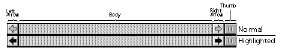
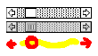

|
|
Apple Media Tool (AMT) versions 2.0 and 2.1 come with three styles
of scroll bars and three styles of movie controllers built-in. This
Technote describes how to customize and add new scroll bars or movie
controllers to AMT 2.0, and to titles created with AMT 2.0, as well
as titles created with Apple Media Tool Programming Environment
(AMTPE) 2.0. This technote still applies to AMT/PE 2.1, with the
changes described in the following sections.
Updated: [Oct 01 1996]
|
Overview
In the Apple Media Tool, vertical and horizontal scrollbars can be
added to picture media, vertical scrollbars can be added to text
media, and (horizontal) movie controllers can be added to QuickTime
media. (Since the various controllers share much of the same
behavior, the rest of this Note uses the term scroller
for movie controllers and horizontal and vertical scroll bars).
Developers often will want to add a custom scroller to their
title. Adding a custom scroller to an AMT 1.2 title is documented in
Appendix A of the Apple Media Tool Programming Environment
User's Guide .
For AMT 2.0 (and greater) titles, the instructions to add a
scroller as described in Appendix A of the Apple Media Tool
Programming Environment User's Guide have changed (though all
the information describing scroller graphic images and scroller parts
is still valid). For example, the 'KVSD', 'KHSD' and 'KHCD' resources
are no longer created for each scroller. Because of the changes made
to AMT 2.0, there are new ways to add a scroller. This Note describes
new techniques for adding scrollers to AMT 2.0 titles.
Back to top
Defining A Scroller
Each scroller is defined by:
- A graphic image (a 'PICT' resource) showing normal and
highlighted versions of the scroller.
- Formatting information describing the separation point between
the normal and highlighted graphic images and the location of all
the scroller's parts.
- A graphic ('PICT' resource) in the AMT Runtime Setup dialog
showing the scroller's normal state.
The following is a description of each of these scrollers:
Scroller Graphic Image
Each scroller's graphic image is stored as a 'PICT' resource. This
graphic consists of adjacent drawings of the normal and highlighted
versions of the scroller (see Figure 1. To view any of the scroller
resources you need to use a resource-editing application such as
ResEdit.
|
IMPORTANT:
Before inspecting (and changing) its scroller resources, it is a
good idea to make a duplicate of your application as a safety backup.
|
Figure 1. Normal and highlighted drawings of a simple scroller
Scroller Format Information
Each scroller consists of different parts: for example, a scroll
bar consists of four parts: a left arrow: the body of the scroll bar;
a right arrow; and a thumb or scroll box. Each part also has a size
and location within the scroller:

Figure 2. Anatomy of a scroll bar
The format information for each scroller specifies the separation
point between the normal and highlighted images and the location of
all the scroller's parts. The format information for a scroll bar is
stored by the AMT as an object of class cScrollBar (see the
Apple Media Tool Programming Envirnoment 2.0 Reference
pg. 4-40 for a description of the cScrollBar class). In addition,
this information can be found in Appendix A of the Apple Media
Tool Programming Environment User's Guide .
Format information for movie controller scrollers is stored by the
AMT as an object of class cControlBar (see the Apple Media Tool
Programming Envirnoment 2.0 Reference pg. 4-31 for a
description of the cControlBar class). In addition, this information
can be found in Appendix A of the Apple Media Tool Programming
Environment User's Guide .
As an example, here is the AMT default definition for the "Funny"
horizontal scrollbar object referenced on pg 5-180 of the AMTPE 2.0
Reference:
object oFunnyHScrollBar
is
cScrollBar
with
ID is 20503;
Buffered is false;
Transparent is true;
Red is 255; Green is 255; Blue is 255;
Direction is Horizontal;
HiliteOffset is 20;
FirstArrowOffset is 0;
FirstArrowSize is 20;
BarOffset is 20;
BarSize is 580;
LastArrowOffset is 600;
LastArrowSize is 20;
ThumbOffset is 620;
ThumbSize is 20;
end;
|
For either the AMT Standard or Minimal Engine (Note that AMT 2.1
only has one engine, called simply "AMT Engine"), these object
definitions can be found in the file ResourceUser.k in the KEY: ENGINE
folder. For an AMT title produced by either AMT or AMTPE, these
object definitions can be found in the Hierarchy.k file in the
SOURCES folder of your project.
AMT Runtime Setup Dialog Scroller Display AMT also displays each
available scroller style when the Runtime Setup menu item of the File
menu is selected. The graphic for this display is another 'PICT'
resource. This graphic shows each available scroller in a column
format. Currently, AMT provides space for only 3 scroller graphics in
the display. Here is what this graphic looks like:

Figure 3. AMT Runtime Setup Scroller Display Graphic
The 'PICT' resource for this graphic can be found in the file
Engine.rsrc in the KEY: ENGINE folder.
Back to top
Adding A Scroller
There are two ways to add new scrollers to a title:
- Replace one of the existing scrollers for an AMT runtime, or
- Replace one of the existing scrollers in the Minimal or
Standard Engine, and use the new engine along with RunTime Maker
to create a title with the new scroller.
If you replace an existing scroller in an AMT runtime, the new
scroller, of course, won't be available to any other title you create
just the title it was added to. If you add a scroller to either the
Minimal or Standard Engine and Runtime Maker, the scroller will be
available to any title created with that engine and
Runtime Maker.
Macintosh Titles
Replacing an Existing Scroller for a Macintosh AMT Runtime
Here are the steps necessary to add a custom scroller to an
existing AMT runtime. The following instructions are
ResEdit-specific, but the general ideas can be applied to any
resource-editing program, like Resorcerer.
Note: the new scroller must have the exact format as the one being
replaced (refer to the Scroller Format Information section above). If
they are different, the format definitions must be changed and the
title re-compiled (refer to the next section on Adding A Scroller to
the AMT ):
- Draw the scroller graphic image (using the formatting
information described above) in the drawing program of your
choice. Most drawing programs can display rulers with pixel
increments so you can accurately measure your scroller's
dimensions. The measurements that AMT uses are to the lines
between pixels; this is the QuickDraw coordinate system.
- Use the square selection tool in your drawing program to
select your graphic; be accurate in your selection.
- Copy your selection to the Clipboard.
- Open your title's runtime in ResEdit.
- Within ResEdit, open the 'PICT' resources, and create a new
resource. Note the new 'PICT' resource's ID number.
- Locate the existing scroller 'PICT' resource you want to
replace. Note the resource ID number of this resource, then delete
the resource.
- Paste in the new scroller graphic from the Clipboard.
- Select Get Resource Info from the Resource menu for the new
resource change the resource ID to the ID of the scroller you just
deleted.
- Close and save the new 'PICT' resource.
Now launch your title. The new scroller will replace all
occurrences of the old scroller.
Windows Titles
Replacing an Existing Scroller for a Windows AMT Runtime
Adding a scroller to a Windows AMT Runtime is different from
adding a scroller to a Macintosh AMT runtime. You can only change the
scroller resources of a title built using AMTPE. If you build your
titles using only AMT, you will need to change the Windows files in
the Runtime Maker CODES folder, as described later in this document
(note that this operation requires AMTPE).
Windows Titles Produced With AMTPE
- Draw the scroller graphic image (using the formatting
information described above) in a drawing program that can save
PICT files. You can do this on a Macintosh, then copy the PICT
file to your Windows system.
- Rename the PICT file you have created so that it has the same
name as the ID of the 'PICT' resource of the scroller you are
replacing. For example, if you are replacing the Horizontal Black
and White Macintosh scroll bar (which is 'PICT' resource ID
20500), you would call the PICT file 20500.PIC.
- Copy the PICT file containing the new scroller into the folder
KEY/RESOURCE . This will replace the old scroller image with your
new one.
- Re-build your title with the AMTPE tools in Microsoft Visual
C++ (follow the instructions as outlined on pg. 2-10 of the
Apple Media Tool Programming Environment User's Guide
).
Adding a Scroller to the AMT
Adding a scroller to the AMT requires you do the following:
- Re-build the Standard or Minimal Engine
- Re-build the Engine Sample project
- Add the new scroller to the scroller display in the AMT
Runtime Setup dialog box
Adding a Scroller to the Standard or Minimal Engine
Here are the necessary steps to add a custom scroller to the AMT
Standard or Minimal Engine:
- Draw the scroller graphic image in the drawing program of your
choice. Most drawing programs can display rulers with pixel
increments so you can accurately measure your scroller's
dimensions. The measurements that AMT uses are to the lines
between pixels; this is the QuickDraw coordinate system.
- Use the square selection tool in your drawing program to
select your graphic; be accurate in your selection.
- Copy your selection to the Clipboard.
- Open the file Runtime.rsrc, which can be found in the
KEY: RUNTIME folder.
- Within ResEdit, open the 'PICT' resources, and create a new
resource. Note the new 'PICT' resource's ID number.
- Locate the existing scroller 'PICT' resource you want to
replace. Note the resource ID number for this resource, then
delete the resource
- Paste in the new scroller graphic from the Clipboard.
- Select Get Resource Info from the Resource menu for the new
resource - change the resource ID to the ID of the scroller you
just deleted.
- Close and save the new 'PICT' resource.
Note: if your scroller has a different format than the scroller
you are replacing (refer to the section above on scroller
formats), you will need to change the formatting information in
the scroller's object definition. Here are the necessary
steps:
- Launch any text editor and open the file ResourceUser.k ,
located in the KEY: ENGINE folder.
- Locate the scroller object you wish to modify (you can search
for the Picture ID resource value)
- Enter the new values for each field that has changed.
- Save your changes.
You must now re-build the engine for the new scroller definition
to take effect. The following is a description of how this is
accomplished:
Re-building the Standard or Minimal Engine
Here are the necessary step to re-build an engine, as described on
pg. 6-4 of the Apple Media Tool Programming Environment User's
Guide :
- Launch MPW.
- Choose Set Project from the Key menu.
- Navigate to the folder for the standard engine (STANDARD
ENGINE) or minimal engine (MINIMAL ENGINE). If you are using AMT
2.1, there is only one engine, which you will find in the folder
AMT Engine.
- Choose Build Options... from the Key menu and select (at
minimum) Verbose, Macintosh, Power_Macintosh and Windows.
- Choose Build All... from the Key menu and re-build the engine.
This will build a new engine file called AMTE, which will be left
in the Release folder of your AMT Engine (or Minimal Engine or
Standard Engine) folder. To use this new engine with AMT, simply copy
the new engine file to the same folder as the AMT (there is no need
to rename it as stated on pg. 6-4 of the Apple Media Tool
Programming Environment User's Guide ). Make sure that you
remove the old engine from the folder containing AMT. The old engine
will be called Minimal Engine, Standard Engine or AMT Engine.
Next, you need to add the scroller as a display item for the AMT
Runtime Setup dialog (from the AMT File menu). The following is a
description of how this is accomplished.
Adding a Scroller to the AMT Runtime Setup Dialog
To add the scroller as a display item in the AMT Runtime Setup
dialog, you must copy the normal scroller from the scroller graphic
image created above and paste it over one of the existing scrollers
in the display. Here are the necessary steps:
- Open the file Engine.rsrc , which can be found in the
KEY: ENGINE folder.
- Within ResEdit, open the 'PICT' resources.
- Locate the graphic for the scroller display. Open and select
the graphic.
- Copy your selection to the Clipboard.
- Using the drawing program of your choice, create a new
document and paste the scroller display graphic into the new
document.
- Open your new scroller graphic.
- Select the normal portion of the scroller from your
graphic.
- Copy your selection to the Clipboard.
- Paste your new scroller over an existing scroller in the
scroller display graphic.
- Select the entire scroller display graphic (that you just
modified).
- Copy your selection to the Clipboard.
- Within ResEdit, Open the file Engine.rsrc again.
- Open the 'PICT' resources.
- Locate the existing scroller display graphic note the resource
ID.
- Delete the old scroller display graphic.
- Paste in the new scroller display graphic from the
Clipboard.
- Assign the old resource ID to the new resource.
- Close and save the new PICT resource.
Your new scroller will now show up in the AMT Runtime Setup
dialog. You may now create titles containing the new scroller with
AMT. However, if you were to create a runtime version of your title
with RunTime Maker, RunTime Maker would not know about the new
scroller. You must also add the new scroller to RunTime Maker. The
following section describes the necessary steps.
Adding a Scroller to RunTime Maker
Adding a custom scroller to RunTime Maker requires you re-build
the Engine Sample project (look in the folder Standard Engine: Sample,
or Minimal Engine: Sample: or AMT Engine: Sample if you are using AMT
2.1). The resulting output files from the Sample project build must
be copied to the RunTime Maker Codes folder. Here are the necessary
steps:
Building the Engine Sample Project
- Launch MPW.
- Using the Key menu, set the project to the Sample project
(from the folder: Minimal Engine: Sample or Standard Engine: Sample
or AMT Engine: Sample).
- Choose Build Options from the Key menu and select (at minimum)
Verbose , Macintosh, Power_Macintosh and Windows.
- Choose Build All from the Key menu and re-build the
project.
- Copy the files: Sample: Program, Sample: Program.base ,
Sample: Program.code, Sample: Program.data and Sample: Program.KWP
from the folder Sample to the folder Runtime Maker: Codes
- Copy the files in the Sample: Windows folder into the
KEY/SAMPLE folder on your Windows machine.
- Alter the required .PIC file in the KEY/RESOURCE folder to
incorporate your new scroller, as described in the section Windows
Titles Produced with Microsoft Visual C++, above.
- Launch Visual C++, and choose Open from the Project menu.
Locate the file KEY/SAMPLE/PROGRAM.MAK.
- Choose Rebuild PROGRAM.EXE from the Project menu.
- When the project has rebuilt, copy the files
KEY/SAMPLE/PROGRAM.EXE, KEY/SAMPLE/PROGRAM.KWP and
KEY/SAMPLE/PROGRAM.INI into the folder RuntimeMaker: Codes: on your
Macintosh.
NOTE: This describes the process for rebuilding the Windows
components of the CODES folder in AMT 2.1. If you are using AMT 2.0,
you must rebuild two CODES folders, one for the Minimal Engine and
one for the Standard Engine.
The Windows components for the Minimal Engine are generated by
rebuilding the KEY/SAMPLE/PROGRAM.MAK project. The Windows components
for the Standard Engine are generated by rebuilding the project
KEY/STNDSAMP/PROGRAM.MAK.
Your scroller is now available for use by RunTime Maker.
Back to top
Summary
AMT and AMTPE developers may want to add custom scrollers to their
multimedia titles. However, starting with AMT 2.0, the process for
adding custom scrollers changed. This Technote describes new
techniques for adding custom scrollers to AMT 2.0 and AMT 2.1 titles.
Back to top
References
Apple Media Tool Reference Guide
Apple Media Tool Programming Environment User's
Guide , Apple Computer.
Apple Media Tool Programming Environment 2.0
Reference , Apple Computer
Back to top
Downloadables
|

|
Acrobat version of this Note (96K).
|
Download
|
Back to top
|